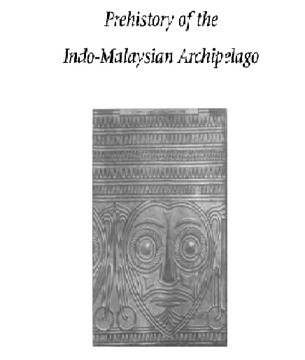

Koloniasasi Bangsa Eropa
Tarekat Mason Bebas dan Masyarakat di Hindia Belanda dan Indonesia 1746-1962
Buku yang mengupas tentang keberadaan mason bebas atau free mason di Hindia Belanda sampai Indonesia Merdeka



Pra-aksara
Prehistory of the Indo-Malaysian Archipelago
Ditulis oleh Peter Bellwood, buku ini masih sangat relevan dan menjadi buku utama untuk membahas tentang manusia yang hidup di masa praaksara

Lainnya
Agama Jawa
apa itu istilah ABANGAN, SANTRI, PRIYAYI dalam kebudayaan jawa yang kemudian oleh masyarakat dianggap sebagai kelas sosial tersendiri setelah menerima pengaruh Islam yang datang dari luar Jawa

Lainnya
Pengantar Ilmu Sejarah
Tujuan sejarah ialah mempelajari hal yang unik, tunggal dan ideografis, sejarah itu memanjang dalam waktu dan mementingkan proses